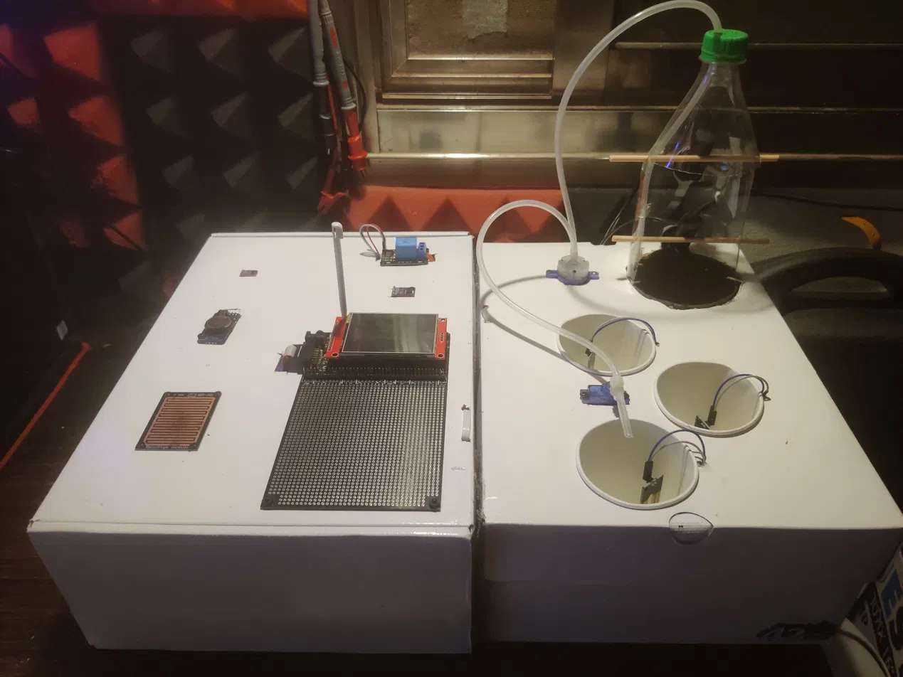

A garden that waters itself
We built an automated irrigation controller around the C8051F380 microcontroller. It reads sensors for soil moisture, light, rain and temperature, keeps track of the time, and decides by itself when to water.
This site explains how the project works and what we learned while building it.

Explore the project
Hardware
The microcontroller, sensors, clock, relay, servo and touchscreen.
Software
How the firmware reads the sensors, keeps time, runs the watering loop and drives the screen.
Challenges
The bugs that stopped us, and how we fixed them.